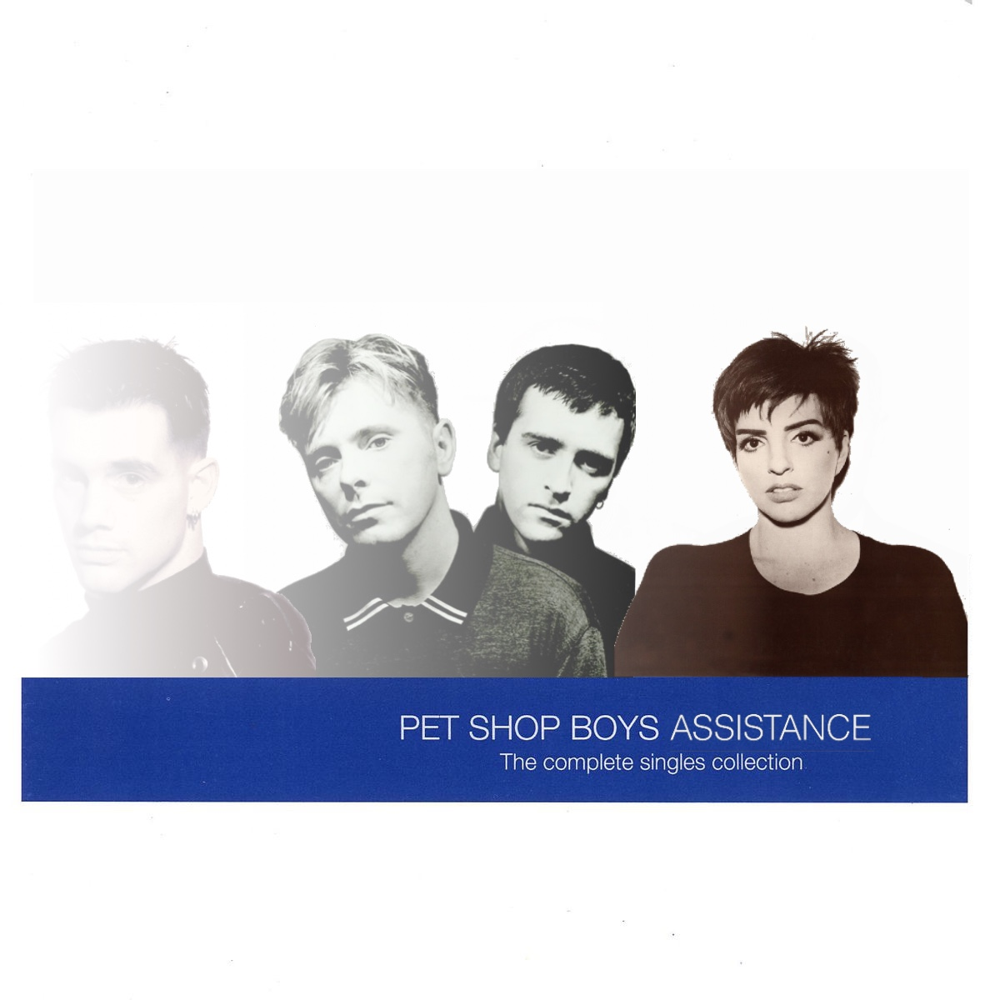

Pet Shop Boys - Assistance
One of the great things about the Pet Shop Boys is they occasionally offer their services to other artists. Some famous examples include recording a whole album for Liza Minnelli (Results, 1989), half an album for the comeback of 60s star Dusty Springfield (Reputation, 1990), and a few hit singles for another synth-pop duo, Electronic (including absolutely stunning "Disappointed"). Seeing these, I decided to dig around and find all of the singles that the Pet Shop Boys had a hand in through either writing or producing the record (so simply performing backing vocals, like Neil Tennant's appearance on Robbie Williams' "No Regrets", doesn't count). With much help from the invaluable PSB resource geowayne.com, I assembled a full compilation album which went a little over the CD 80-minute limit. So, I've had to make the (actually reasonable) decision to drop any single which didn't have a notable chart impact. So now this should hopefully act as a little companion piece to anyone's journey into the Pet Shop Boys discography.
| No. | Title | Artist | PSB involvement | Length |
|---|---|---|---|---|
| 1 | I'm Not Scared | Eigth Wonder | Writer | 3:49 |
| 2 | Nothing Has Been Proved | Dusty Springfield | Writer and co-producer (with Julian Mendelsohn) | 4:45 |
| 3 | Losing My Mind | Liza Minnelli | Co-producer (with Julian Mendelsohn) | 4:09 |
| 4 | Don't Drop Bombs | Writer and co-producer (with Julian Mendelsohn) | 3:34 | |
| 5 | So Sorry, I Said | 3:14 | ||
| 6 | In Private | Dusty Springfield | 4:18 | |
| 7 | Getting Away With It | Electronic | Tennant only; Co-writer and co-producer (with Electronic) | 4:19 |
| 8 | Love Pains | Liza Minnelli | Co-producer (with Julian Mendelsohn and Steve Hurley) | 3:54 |
| 9 | Love is Everywhere | Cicero | Producer | 3:40 |
| 10 | That Loving Feeling | 3:52 | ||
| 11 | Disappointed | Electronic | Tennant only; Co-writer, co-producer (with Electronic) and lead vocals | 4:22 |
| 12 | Heaven Must Have Sent You Back to Me (Remix) | Cicero | Co-producer (with Cicero) | 3:05 |
| 13 | The Crying Game | Boy George | Producer | 3:24 |
| 14 | Do the Right Thing | Ian Wright | Lowe only; Co-writer (with Wright and Steve Kutner), producer | 4:13 |
| 15 | Girls & Boys (Pet Shop Boys Radio Edit) | Blur | Remixer | 4:04 |
| 16 | Absolutely Fabulous | Absolutely Fabulous | Co-writer (with Jennifer Saunders and Joanna Lumley) and producer | 3:46 |
| 17 | Hallo Spaceboy (Pet Shop Boys Remix) | David Bowie | Remixer | 4:25 |
| 18 | Love Life | Alcazar | Writer | 3:53 |
| 19 | She's Madonna | Robbie Williams | Performer, co-writer (with Williams) and producer | 4:16 |
| 20 | The Loving Kind | Girls Aloud | Co-writer (with Miranda Cooper, Brian Higgins and Tim Powell) | 3:59 |
| 79:43 |
Right, I have several notes. Firstly, the Pet Shop Boys recorded their own versions of "I'm Not Scared", "Losing My Mind", "In Private" (with Elton John), "Girls & Boys" (in a live rendition) and "Love Life", although these were all released after the versions presented here. Their demo versions of "Nothing Has Been Proved", "So Sorry, I Said" and "The Loving Kind" have also been released after the fact. On "Getting Away With It", while only Tennant is credited, Lowe is noted to have some involvement in the song (e.g. its bassline), although he had no involvement in the other Electronic collaboration "Disappointed". While the Pet Shop Boys have done a number of remixes over the years, only "Girls & Boys" and "Hallo Spaceboy" have been presented as A-sides (well, "Girls & Boys" was the A-side of CD 2 of the single's two-CD set, but its popularity and promotion I think makes it count). The only other single where their remix was presented as an A-side was the re-release of Yoko Ono's "Walking on Thin Ice", which I haven't included because it's not the original A-side (which was just the song itself in 1981). "Absolutely Fabulous" is usually included with the rest of the Pet Shop Boys catalogue (because it was released on a one-off alias for charity), but isn't included on any Pet Shop Boys compilations (because of licensing issues), so I've included it here. And finally, the songs they were involved in which I haven't included because of their lack of significant chart action are:
- "Live for Today" by Cicero with Sylvia Mason-James - Producer
- "Jack and Jill Party" by Pete Burns - Co-writer (with Burns), producer; the original PSB demo was released later
- "Joseph, Better You Than Me" by The Killers feat. Elton John and Neil Tennant - Tennant only; Co-writer and co-lead vocals (with Brandon Flowers and John)
- "A Little Black Dress" by West End Girls - Writer
- "Subculture" by Stop Modernists feat. Chris Lowe - Lowe only; Lead vocals
- "Purple Zone" by Soft Cell - Performer, co-producer (with Soft Cell and Philip Larsen)
And just to be clear - the Pet Shop Boys have written plenty more songs for other artists, but these are the only ones which were released as singles, there are of course many more Tennant-Lowe songs (e.g. "Falling" by Kylie Minogue) which were just album tracks.
Also, if you want to read more about how these collaborations came about, the aforementioned geowayne.com is your one-stop shop for anything Pet Shop Boys.

A mock-up artwork, based on PSB's 'Discography' compilation, featuring (right-to-left) Liza Minnelli, Electronic and Cicero
Released: 1988-2009
Genre: Synth-pop
Favourite song: "Disappointed"